Девушка в красном
Тренды меняются, но красные губы никогда не выходят из моды. Яркий штрих сочетается с любым образом и типом внешности. Однако выбрать «свой» оттенок непросто. Наши героини примерили разные средства для губ в уникальном оттенке #400 и доказали: красный цвет от Giorgio Armani идеально подходит всем.
-
Саша Федорова
-
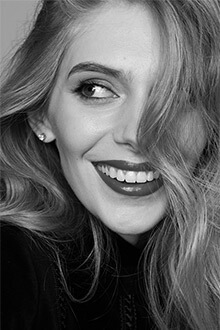Ясмина Муратович
-
 Мари Коберидзе
Мари Коберидзе

Ясмина Муратович
Красную помаду носит сильная женщина, которая уверенно идет к своей цели. Днем я делаю неяркий естественный макияж, а красную помаду оставляю на вечер. Когда образу чего-то не хватает, крашу губы алым, иногда добавляю черные стрелки. Предпочитаю стойкие текстуры с матовым финишем. Но главное – выбрать свой правильный цвет, ведь оттенков красного очень много. Именно такой – идеальный и универсальный – оттенок Rouge D’Armani 400 есть у Giorgio Armani.

How to:
-
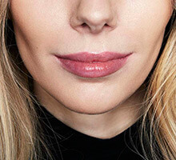
Для стойкости помады используйте праймер. Нанесите его тонким слоем на контур губ, вбивая подушечками пальцев.
-
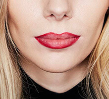
Очертите контур губ карандашом в тон помады..
-
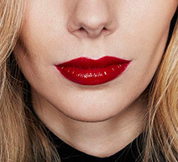
Для идеального эффекта нанесите помаду, используя кисть для макияжа губ.
Наши товары:
-

Eye&lip contour perfector Armani prima
Праймер для губ и области вокруг глаз -
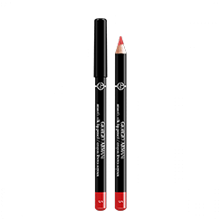
Smooth Silk Lip
Pencil 05Карандаш для губ -
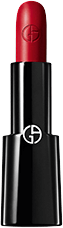
Rouge D’Armani
400Помада для губ

Мари Коберидзе
Красная помада у меня ассоциируется с кино и еще раз с кино! С фильмами Хичкока и с любимыми актрисами – Гретой Гарбо, Марлен Дитрих, Кэтрин Хепберн. В образе с красной помадой мне нравится баланс естественности, легкости и яркого акцента на губах. Такой вариант подходит для любого повода и времени суток, особенно если цвет сочный и долгоиграющий, как у Ecstasy Lacquer 400. Иногда я наношу ее просто для себя, когда еду за рулем в машине на дачу. Ведь красная помада – это прежде всего настроение.

How to:
-

Чтобы помада стала ярче, а контур – четче, растушуйте вокруг губ хайлайтер.
-
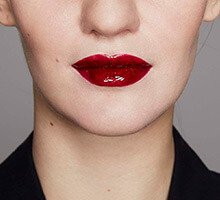
На всю поверхность губ нанесите один слой блеска. Для создания ультраглянцевого эффекта через 5 минут нанесите второй слой.
Наши товары:
-
High precision
retouchХайлайтер -
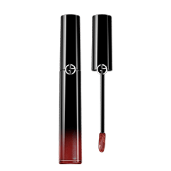
Ecstasy
Lacquer 400Блеск для губ
Саша Федорова
Красная помада – это вызов, любовь, страсть. И, конечно, вневременной тренд. Для меня - это еще и вечерний «аксессуар». Правда, пару раз мой порыв выйти с красной помадой потерпел фиаско. Привычки и ежедневного опыта у меня не было, я просто забыла, что накрасилась ярко, размазала уголки и «съела» пол губы. Поэтому идеальная красная помада должна быть стойкой. Предпочитаю не классический стик, а флакон с аппликатором, как у Lip Maestro - проверила, так гораздо удобнее наносить.

How to:
-
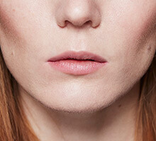
Для стойкости помады используйте праймер. Нанесите его тонким слоем на контур губ, вбивая подушечками пальцев.
-
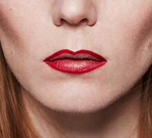
Прорисуйте контур, слегка выходя за естественную границу губ (не больше 1мм, иначе макияж будет неестественным).
-
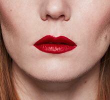
Нанесите помаду.Для создания матового эффекта промокните губы салфеткой..
Наши товары:
-
Eye&lip contour
perfector Armani primaПраймер для губ и области вокруг глаз -
Smooth Silk Lip
Pencil 05Карандаш для губ -
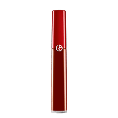
Lip Maestro
400Бархатный гель для губ
Задать вопрос визажисту
Задайте визажисту вопрос про красную помаду и получите приятный сюрприз от Giorgio Armani.
Оставьте свой e-mail и получите скидку на все бьюти-продукты Giorgio Armani.
# 400 Все продукты
-

Ecstasy shine lipstick 400
Помада-бальзам для губ -
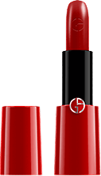
Rouge Ecstasy СС 400
Помада для губ -
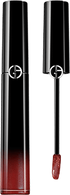
Ecstasy Lacquer 400
Блеск для губ